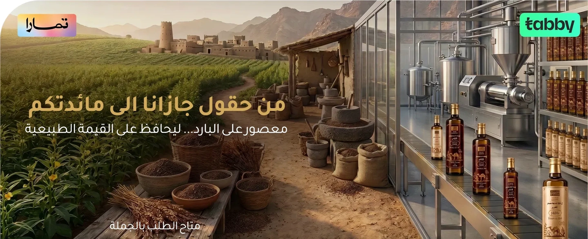

مصنع وطني سعودي معتمد
عراقة المزارع وتقنية التصنيع الحديثة
من أودية جازان الخصبة، مهد أجود بذور السمسم العربي الأصيل، انطلقت مسيرة جازانة. نحن نجمع بين إرث الأجداد في انتقاء البذور ونموذج صناعي حديث، وأحدث آلات العصر البارد التي تحافظ على المركبات الغذائية الغنية ومضادات الأكسدة دون تعريض الزيت لأي حرارة.
يخضع كل لتر ننتجه في مصنعنا لفحوصات مخبرية دقيقة تضمن خلوه التام من الغش أو أي إضافات، مما يجعله الخيار الموثوق لمئات الأسر السعودية الباحثة عن الصحة والنكهة الحقيقية.
HACCPمعتمد لسلامة الغذاء
15+سنة خبرة متوارثة
100%طبيعي دون إضافات
